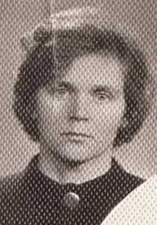

Valda Katlapa b. 1933
Wife of Peter's first cousin twice removed Valdis Laimdots Sirlaks.
Living. As for every living relative on this site, the birth date is given by year only, and no current address is shown.
Also recorded as Valda Katlapa (married name Sirlaka).
Valda Katlapa was born in 19332,3. She married Valdis Laimdots Sirlaks4.
Family
- Husband
- Valdis Laimdots Sirlaks 1924–1995 · married 4
- Children
- Jānis Sirlaks b. 1956 documented
- Inga Sirlaka b. 1959 documented
Life events
| Event | Date | Place and details |
|---|---|---|
| Born | 1933 | 2,3 |
| Married | with Valdis Laimdots Sirlaks4 |
Photographs

Sources
- MyHeritage family tree 'Dzimta' of Peter's third cousin (his family site), member GEDCOM export of 26 Oct 2026, I59 (person-6000059), GEDCOM lines 2506–2534.
NAME Valda /Katlapa/ · _MARNM Sirlaka
- Ainas Sirlakas atmiņas ("Vīstuči"), Aina Jurciņa née Sirlaka, Priekuļi, 1998, p. 34, section "DĀVJA UN ALMAS OZOLS ZAROJAS".
Valda Katlapa, dz. 1933
Translation: Valda Katlapa, b. 1933
LIVING. Wife (widow from 1995) of Valdis Sirlaks; lived at Vīstuči from Christmas 1995 (p. 49).
- MyHeritage family tree 'Dzimta' of Peter's third cousin (his family site), member GEDCOM export of 26 Oct 2026, I59 (person-6000059), GEDCOM lines 2506–2534.
BIRT · 1933
- Ainas Sirlakas atmiņas ("Vīstuči"), Aina Jurciņa née Sirlaka, Priekuļi, 1998, p. 34, section "DĀVJA UN ALMAS OZOLS ZAROJAS".
Valdis Sirlaks, dz. 1924. 28. septembrī … Valda Katlapa, 1933 … Bērni: Jānis, dz. 1956 … Inga, dz. 1959
Translation: Valdis Sirlaks, b. 28 Sep 1924 … Valda Katlapa, 1933 … Children: Jānis, b. 1956 … Inga, b. 1959
Wife Valda née Katlapa (LIVING); children Jānis and Inga (LIVING). Marriage date not given (before 1956).